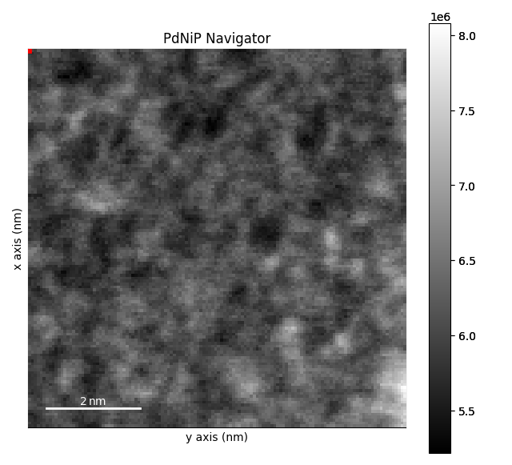
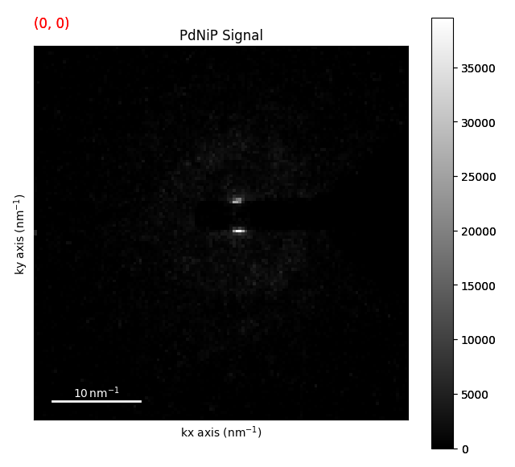
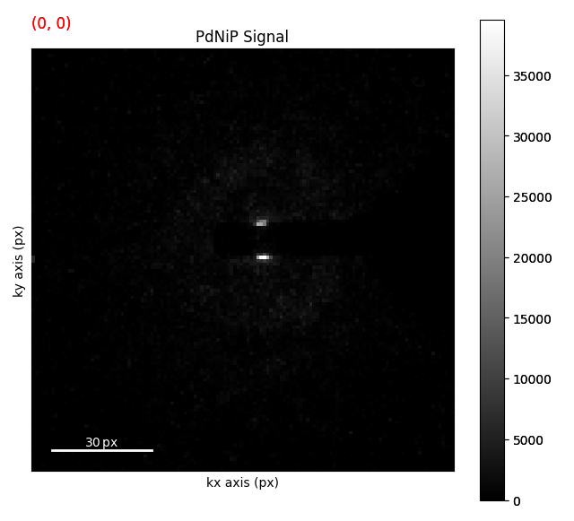
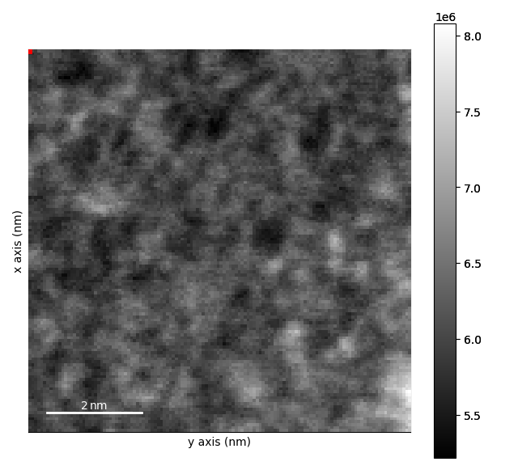

Note
Go to the end to download the full example code.
Flat Ewald’s Sphere Assumption#
In most cases, the Ewald’s sphere is assumed to be flat for diffraction patterns when doing 4D STEM. This is almost always a good assumption. That being said there are a couple of common units used with 4D STEM (e.g. nm-1, mrad, pixel coordinates) and it is important to understand how these units relate to each other. These units are also related to the camera length, pixel size, and beam energy (wavelength) of the microscope. In reality the beam energy is really the only thing that you need to know.
Let’s look at an example of this using the ZrNb Precipitate dataset.
from pyxem.data import pdnip_glass
g = pdnip_glass(allow_download=True)
g.calibration.beam_energy = "200 kV"
g.calibration.convergance_angle = "1 mrad" # set the convergence angle
Downloading file 'PdNiP.zspy' from 'https://zenodo.org/records/15490547/files/PdNiP.zspy' to '/home/runner/.cache/pyxem/0.21.0'.
0%| | 0.00/305M [00:00<?, ?B/s]
0%| | 1.02k/305M [00:00<24:56:11, 3.39kB/s]
0%| | 14.3k/305M [00:00<1:58:41, 42.8kB/s]
0%| | 41.0k/305M [00:00<48:14, 105kB/s]
0%| | 88.1k/305M [00:00<25:07, 202kB/s]
0%| | 173k/305M [00:00<13:45, 369kB/s]
0%| | 264k/305M [00:00<10:13, 496kB/s]
0%| | 430k/305M [00:01<06:30, 778kB/s]
0%| | 513k/305M [00:01<06:41, 757kB/s]
0%| | 642k/305M [00:01<05:52, 862kB/s]
0%| | 740k/305M [00:01<05:56, 853kB/s]
0%| | 839k/305M [00:01<06:01, 841kB/s]
0%| | 937k/305M [00:01<06:01, 839kB/s]
0%|▏ | 1.02M/305M [00:01<06:17, 804kB/s]
0%|▏ | 1.21M/305M [00:01<04:47, 1.05MB/s]
0%|▏ | 1.33M/305M [00:01<04:54, 1.03MB/s]
0%|▏ | 1.43M/305M [00:02<05:08, 983kB/s]
1%|▏ | 1.54M/305M [00:02<05:12, 969kB/s]
1%|▏ | 1.69M/305M [00:02<04:48, 1.05MB/s]
1%|▏ | 1.79M/305M [00:02<05:02, 1.00MB/s]
1%|▏ | 1.89M/305M [00:02<05:15, 958kB/s]
1%|▎ | 1.99M/305M [00:02<05:30, 917kB/s]
1%|▎ | 2.08M/305M [00:02<05:44, 878kB/s]
1%|▎ | 2.20M/305M [00:02<05:34, 904kB/s]
1%|▎ | 2.29M/305M [00:03<05:53, 856kB/s]
1%|▎ | 2.41M/305M [00:03<05:32, 908kB/s]
1%|▎ | 2.52M/305M [00:03<05:25, 929kB/s]
1%|▎ | 2.67M/305M [00:03<04:54, 1.02MB/s]
1%|▎ | 2.77M/305M [00:03<05:07, 981kB/s]
1%|▎ | 2.87M/305M [00:03<05:21, 938kB/s]
1%|▍ | 2.97M/305M [00:03<05:36, 897kB/s]
1%|▍ | 3.06M/305M [00:03<05:43, 878kB/s]
1%|▍ | 3.16M/305M [00:03<05:49, 863kB/s]
1%|▍ | 3.25M/305M [00:04<06:04, 827kB/s]
1%|▍ | 3.34M/305M [00:04<06:08, 818kB/s]
1%|▍ | 3.44M/305M [00:04<06:05, 824kB/s]
1%|▍ | 3.55M/305M [00:04<05:46, 870kB/s]
1%|▍ | 3.68M/305M [00:04<05:19, 941kB/s]
1%|▍ | 3.78M/305M [00:04<05:30, 910kB/s]
1%|▍ | 3.88M/305M [00:04<05:38, 888kB/s]
1%|▌ | 3.98M/305M [00:04<05:44, 873kB/s]
1%|▌ | 4.08M/305M [00:05<05:48, 863kB/s]
1%|▌ | 4.19M/305M [00:05<05:35, 896kB/s]
1%|▌ | 4.32M/305M [00:05<05:13, 959kB/s]
1%|▌ | 4.55M/305M [00:05<03:58, 1.26MB/s]
2%|▌ | 4.68M/305M [00:05<04:09, 1.20MB/s]
2%|▌ | 4.80M/305M [00:05<04:20, 1.15MB/s]
2%|▌ | 4.91M/305M [00:05<04:32, 1.10MB/s]
2%|▋ | 5.02M/305M [00:05<04:44, 1.05MB/s]
2%|▋ | 5.13M/305M [00:05<04:59, 999kB/s]
2%|▋ | 5.56M/305M [00:06<02:44, 1.81MB/s]
2%|▊ | 6.56M/305M [00:06<01:18, 3.82MB/s]
3%|▉ | 7.99M/305M [00:06<02:10, 2.27MB/s]
3%|█ | 8.31M/305M [00:07<02:22, 2.09MB/s]
3%|█ | 8.91M/305M [00:07<01:56, 2.54MB/s]
3%|█▎ | 10.6M/305M [00:07<01:03, 4.60MB/s]
4%|█▍ | 11.5M/305M [00:07<00:56, 5.17MB/s]
4%|█▌ | 12.2M/305M [00:07<01:05, 4.46MB/s]
4%|█▌ | 12.8M/305M [00:07<01:04, 4.54MB/s]
4%|█▋ | 13.3M/305M [00:08<01:17, 3.75MB/s]
5%|█▋ | 13.8M/305M [00:08<01:16, 3.78MB/s]
5%|█▊ | 14.2M/305M [00:08<01:17, 3.76MB/s]
5%|█▊ | 14.6M/305M [00:08<01:18, 3.71MB/s]
5%|█▉ | 15.0M/305M [00:08<01:19, 3.63MB/s]
5%|█▉ | 15.4M/305M [00:08<01:48, 2.67MB/s]
5%|█▉ | 15.7M/305M [00:08<01:48, 2.67MB/s]
5%|██ | 16.0M/305M [00:09<01:48, 2.65MB/s]
5%|██ | 16.3M/305M [00:09<01:50, 2.61MB/s]
5%|██ | 16.6M/305M [00:09<02:03, 2.33MB/s]
6%|██ | 16.8M/305M [00:09<02:06, 2.28MB/s]
6%|██▏ | 17.1M/305M [00:09<02:09, 2.21MB/s]
6%|██▏ | 17.4M/305M [00:09<02:07, 2.26MB/s]
6%|██▏ | 17.8M/305M [00:09<01:49, 2.61MB/s]
6%|██▎ | 18.2M/305M [00:09<01:40, 2.86MB/s]
6%|██▎ | 18.6M/305M [00:10<01:32, 3.08MB/s]
6%|██▍ | 19.1M/305M [00:10<01:26, 3.31MB/s]
6%|██▍ | 19.5M/305M [00:10<01:25, 3.35MB/s]
7%|██▍ | 19.9M/305M [00:10<01:24, 3.38MB/s]
7%|██▌ | 20.3M/305M [00:10<01:23, 3.40MB/s]
7%|██▌ | 20.6M/305M [00:10<01:27, 3.24MB/s]
7%|██▌ | 21.0M/305M [00:10<01:31, 3.10MB/s]
7%|██▋ | 21.3M/305M [00:10<01:31, 3.11MB/s]
7%|██▋ | 21.7M/305M [00:11<01:27, 3.22MB/s]
7%|██▊ | 22.2M/305M [00:11<01:24, 3.34MB/s]
7%|██▊ | 22.6M/305M [00:11<01:20, 3.51MB/s]
8%|██▉ | 23.1M/305M [00:11<01:18, 3.59MB/s]
8%|██▉ | 23.5M/305M [00:11<01:18, 3.59MB/s]
8%|██▉ | 23.9M/305M [00:11<01:18, 3.60MB/s]
8%|███ | 24.3M/305M [00:11<01:17, 3.60MB/s]
8%|███ | 24.7M/305M [00:11<01:20, 3.48MB/s]
8%|███▏ | 25.2M/305M [00:11<01:17, 3.60MB/s]
8%|███▏ | 25.6M/305M [00:12<01:17, 3.60MB/s]
9%|███▏ | 26.0M/305M [00:12<01:17, 3.61MB/s]
9%|███▎ | 26.4M/305M [00:12<01:20, 3.45MB/s]
9%|███▎ | 26.7M/305M [00:12<01:24, 3.27MB/s]
9%|███▎ | 27.0M/305M [00:12<01:28, 3.12MB/s]
9%|███▍ | 27.4M/305M [00:12<01:28, 3.12MB/s]
9%|███▍ | 27.9M/305M [00:12<01:25, 3.24MB/s]
9%|███▌ | 28.2M/305M [00:12<01:26, 3.19MB/s]
9%|███▌ | 28.6M/305M [00:13<01:23, 3.32MB/s]
10%|███▌ | 29.0M/305M [00:13<01:27, 3.17MB/s]
10%|███▋ | 29.4M/305M [00:13<01:23, 3.29MB/s]
10%|███▋ | 29.8M/305M [00:13<01:21, 3.39MB/s]
10%|███▊ | 30.3M/305M [00:13<01:17, 3.54MB/s]
10%|███▊ | 30.7M/305M [00:13<01:17, 3.52MB/s]
10%|███▊ | 31.0M/305M [00:13<01:20, 3.39MB/s]
10%|███▉ | 31.5M/305M [00:13<01:18, 3.46MB/s]
10%|███▉ | 31.9M/305M [00:13<01:16, 3.55MB/s]
11%|████ | 32.3M/305M [00:14<01:16, 3.57MB/s]
11%|████ | 32.7M/305M [00:14<01:20, 3.40MB/s]
11%|████ | 33.0M/305M [00:14<01:23, 3.26MB/s]
11%|████▏ | 33.5M/305M [00:14<01:19, 3.41MB/s]
11%|████▏ | 33.9M/305M [00:14<01:17, 3.50MB/s]
11%|████▎ | 34.3M/305M [00:14<01:20, 3.37MB/s]
11%|████▎ | 34.7M/305M [00:14<01:16, 3.52MB/s]
12%|████▍ | 35.1M/305M [00:14<01:16, 3.51MB/s]
12%|████▍ | 35.6M/305M [00:15<01:14, 3.63MB/s]
12%|████▍ | 36.0M/305M [00:15<01:14, 3.62MB/s]
12%|████▌ | 36.4M/305M [00:15<01:15, 3.57MB/s]
12%|████▌ | 36.9M/305M [00:15<01:14, 3.59MB/s]
12%|████▋ | 37.2M/305M [00:15<01:18, 3.42MB/s]
12%|████▋ | 37.6M/305M [00:15<01:20, 3.32MB/s]
12%|████▋ | 38.0M/305M [00:15<01:20, 3.32MB/s]
13%|████▊ | 38.3M/305M [00:15<01:22, 3.25MB/s]
13%|████▊ | 38.7M/305M [00:15<01:20, 3.31MB/s]
13%|████▊ | 39.1M/305M [00:16<01:24, 3.14MB/s]
13%|████▉ | 39.5M/305M [00:16<01:22, 3.20MB/s]
13%|████▉ | 39.9M/305M [00:16<01:20, 3.30MB/s]
13%|█████ | 40.2M/305M [00:16<01:23, 3.18MB/s]
13%|█████ | 40.6M/305M [00:16<01:19, 3.31MB/s]
13%|█████ | 41.0M/305M [00:16<01:41, 2.60MB/s]
14%|█████▏ | 41.3M/305M [00:16<01:40, 2.61MB/s]
14%|█████▏ | 41.7M/305M [00:17<01:31, 2.88MB/s]
14%|█████▏ | 42.0M/305M [00:17<01:50, 2.37MB/s]
14%|█████▎ | 42.3M/305M [00:17<01:51, 2.35MB/s]
14%|█████▎ | 42.5M/305M [00:17<01:54, 2.29MB/s]
14%|█████▎ | 42.8M/305M [00:17<01:57, 2.22MB/s]
14%|█████▍ | 43.2M/305M [00:17<01:40, 2.60MB/s]
14%|█████▍ | 43.6M/305M [00:17<01:32, 2.81MB/s]
14%|█████▍ | 44.0M/305M [00:17<01:23, 3.12MB/s]
15%|█████▌ | 44.4M/305M [00:18<01:27, 2.99MB/s]
15%|█████▌ | 44.7M/305M [00:18<01:25, 3.04MB/s]
15%|█████▋ | 45.2M/305M [00:18<01:19, 3.25MB/s]
15%|█████▋ | 45.6M/305M [00:18<01:15, 3.44MB/s]
15%|█████▋ | 46.1M/305M [00:18<01:14, 3.49MB/s]
15%|█████▊ | 46.4M/305M [00:18<01:17, 3.34MB/s]
15%|█████▊ | 46.8M/305M [00:18<01:16, 3.37MB/s]
16%|█████▉ | 47.2M/305M [00:18<01:14, 3.44MB/s]
16%|█████▉ | 47.6M/305M [00:18<01:18, 3.29MB/s]
16%|█████▉ | 48.0M/305M [00:19<01:16, 3.34MB/s]
16%|██████ | 48.4M/305M [00:19<01:13, 3.51MB/s]
16%|██████ | 48.8M/305M [00:19<01:16, 3.34MB/s]
16%|██████▏ | 49.2M/305M [00:19<01:17, 3.29MB/s]
16%|██████▏ | 49.5M/305M [00:19<01:21, 3.14MB/s]
16%|██████▏ | 49.9M/305M [00:19<01:19, 3.20MB/s]
17%|██████▎ | 50.3M/305M [00:19<01:16, 3.32MB/s]
17%|██████▎ | 50.8M/305M [00:19<01:12, 3.49MB/s]
17%|██████▍ | 51.2M/305M [00:20<01:10, 3.58MB/s]
17%|██████▍ | 51.6M/305M [00:20<01:28, 2.86MB/s]
17%|██████▍ | 51.9M/305M [00:20<01:30, 2.79MB/s]
17%|██████▌ | 52.2M/305M [00:20<01:31, 2.75MB/s]
17%|██████▌ | 52.4M/305M [00:20<01:35, 2.65MB/s]
17%|██████▌ | 52.7M/305M [00:20<01:53, 2.22MB/s]
17%|██████▌ | 53.0M/305M [00:20<01:56, 2.17MB/s]
18%|██████▋ | 53.3M/305M [00:20<01:40, 2.49MB/s]
18%|██████▋ | 53.6M/305M [00:21<01:43, 2.42MB/s]
18%|██████▋ | 54.0M/305M [00:21<01:30, 2.76MB/s]
18%|██████▊ | 54.4M/305M [00:21<01:24, 2.97MB/s]
18%|██████▊ | 54.7M/305M [00:21<01:27, 2.85MB/s]
18%|██████▉ | 55.1M/305M [00:21<01:24, 2.95MB/s]
18%|██████▉ | 55.6M/305M [00:21<01:19, 3.14MB/s]
18%|██████▉ | 55.9M/305M [00:21<01:17, 3.20MB/s]
18%|███████ | 56.3M/305M [00:21<01:21, 3.05MB/s]
19%|███████ | 56.7M/305M [00:22<01:19, 3.12MB/s]
19%|███████ | 57.0M/305M [00:22<01:22, 3.01MB/s]
19%|███████▏ | 57.4M/305M [00:22<01:15, 3.26MB/s]
19%|███████▏ | 57.9M/305M [00:22<01:13, 3.36MB/s]
19%|███████▎ | 58.3M/305M [00:22<01:10, 3.48MB/s]
19%|███████▎ | 58.7M/305M [00:22<01:10, 3.47MB/s]
19%|███████▍ | 59.2M/305M [00:22<01:08, 3.59MB/s]
20%|███████▍ | 59.6M/305M [00:22<01:08, 3.56MB/s]
20%|███████▍ | 60.0M/305M [00:22<01:07, 3.62MB/s]
20%|███████▌ | 60.5M/305M [00:23<01:06, 3.65MB/s]
20%|███████▌ | 60.9M/305M [00:23<01:06, 3.64MB/s]
20%|███████▋ | 61.3M/305M [00:23<01:08, 3.55MB/s]
20%|███████▋ | 61.7M/305M [00:23<01:09, 3.48MB/s]
20%|███████▋ | 62.1M/305M [00:23<01:08, 3.53MB/s]
21%|███████▊ | 62.5M/305M [00:23<01:12, 3.36MB/s]
21%|███████▊ | 62.9M/305M [00:23<01:10, 3.42MB/s]
21%|███████▉ | 63.3M/305M [00:23<01:09, 3.48MB/s]
21%|███████▉ | 63.7M/305M [00:24<01:10, 3.43MB/s]
21%|████████ | 64.2M/305M [00:24<01:07, 3.57MB/s]
21%|████████ | 64.6M/305M [00:24<01:06, 3.58MB/s]
21%|████████ | 65.0M/305M [00:24<01:06, 3.63MB/s]
21%|████████▏ | 65.4M/305M [00:24<01:06, 3.62MB/s]
22%|████████▏ | 65.9M/305M [00:24<01:04, 3.70MB/s]
22%|████████▎ | 66.3M/305M [00:24<01:49, 2.18MB/s]
22%|████████▎ | 66.6M/305M [00:25<01:46, 2.25MB/s]
22%|████████▎ | 66.8M/305M [00:25<01:44, 2.28MB/s]
22%|████████▎ | 67.1M/305M [00:25<01:44, 2.28MB/s]
22%|████████▍ | 67.4M/305M [00:25<01:55, 2.05MB/s]
22%|████████▍ | 67.6M/305M [00:25<01:52, 2.11MB/s]
22%|████████▍ | 68.0M/305M [00:25<01:41, 2.34MB/s]
22%|████████▌ | 68.5M/305M [00:25<01:22, 2.87MB/s]
23%|████████▌ | 68.9M/305M [00:25<01:16, 3.08MB/s]
23%|████████▋ | 69.4M/305M [00:26<01:13, 3.19MB/s]
23%|████████▋ | 69.7M/305M [00:26<01:13, 3.18MB/s]
23%|████████▋ | 70.1M/305M [00:26<01:14, 3.15MB/s]
23%|████████▊ | 70.6M/305M [00:26<01:07, 3.45MB/s]
23%|████████▊ | 71.0M/305M [00:26<01:07, 3.45MB/s]
23%|████████▉ | 71.4M/305M [00:26<01:09, 3.38MB/s]
24%|████████▉ | 71.9M/305M [00:26<01:04, 3.61MB/s]
24%|█████████ | 72.3M/305M [00:26<01:04, 3.60MB/s]
24%|█████████ | 72.8M/305M [00:27<01:04, 3.60MB/s]
24%|█████████▏ | 73.2M/305M [00:27<01:03, 3.65MB/s]
24%|█████████▏ | 73.6M/305M [00:27<01:03, 3.64MB/s]
24%|█████████▏ | 74.1M/305M [00:27<01:02, 3.67MB/s]
24%|█████████▎ | 74.5M/305M [00:27<01:02, 3.66MB/s]
25%|█████████▎ | 74.9M/305M [00:27<01:01, 3.73MB/s]
25%|█████████▍ | 75.4M/305M [00:27<01:01, 3.74MB/s]
25%|█████████▍ | 75.8M/305M [00:27<01:10, 3.27MB/s]
25%|█████████▍ | 76.1M/305M [00:28<01:12, 3.15MB/s]
25%|█████████▌ | 76.4M/305M [00:28<01:15, 3.04MB/s]
25%|█████████▌ | 76.9M/305M [00:28<01:10, 3.25MB/s]
25%|█████████▋ | 77.4M/305M [00:28<01:04, 3.54MB/s]
26%|█████████▋ | 77.7M/305M [00:28<01:06, 3.40MB/s]
26%|█████████▊ | 78.2M/305M [00:28<01:04, 3.50MB/s]
26%|█████████▊ | 78.5M/305M [00:28<01:16, 2.97MB/s]
26%|█████████▊ | 78.8M/305M [00:28<01:18, 2.88MB/s]
26%|█████████▊ | 79.1M/305M [00:29<01:19, 2.82MB/s]
26%|█████████▉ | 79.4M/305M [00:29<01:22, 2.72MB/s]
26%|█████████▉ | 79.7M/305M [00:29<01:39, 2.27MB/s]
26%|█████████▉ | 79.9M/305M [00:29<01:40, 2.23MB/s]
26%|██████████ | 80.3M/305M [00:29<01:33, 2.39MB/s]
27%|██████████ | 80.8M/305M [00:29<01:17, 2.88MB/s]
27%|██████████ | 81.1M/305M [00:29<01:17, 2.89MB/s]
27%|██████████▏ | 81.5M/305M [00:29<01:11, 3.14MB/s]
27%|██████████▏ | 82.1M/305M [00:30<01:03, 3.52MB/s]
27%|██████████▎ | 82.4M/305M [00:30<01:05, 3.39MB/s]
27%|██████████▎ | 82.8M/305M [00:30<01:08, 3.25MB/s]
27%|██████████▍ | 83.2M/305M [00:30<01:06, 3.34MB/s]
27%|██████████▍ | 83.6M/305M [00:30<01:03, 3.50MB/s]
28%|██████████▍ | 84.1M/305M [00:30<01:03, 3.50MB/s]
28%|██████████▌ | 84.4M/305M [00:30<01:05, 3.35MB/s]
28%|██████████▌ | 84.9M/305M [00:30<01:03, 3.47MB/s]
28%|██████████▋ | 85.3M/305M [00:30<01:02, 3.51MB/s]
28%|██████████▋ | 85.7M/305M [00:31<01:01, 3.55MB/s]
28%|██████████▋ | 86.2M/305M [00:31<00:59, 3.65MB/s]
28%|██████████▊ | 86.6M/305M [00:31<01:01, 3.56MB/s]
29%|██████████▊ | 87.0M/305M [00:31<01:00, 3.57MB/s]
29%|██████████▉ | 87.3M/305M [00:31<01:03, 3.42MB/s]
29%|██████████▉ | 87.8M/305M [00:31<01:01, 3.52MB/s]
29%|███████████ | 88.2M/305M [00:31<01:01, 3.55MB/s]
29%|███████████ | 88.6M/305M [00:31<01:00, 3.57MB/s]
29%|███████████ | 89.1M/305M [00:32<01:00, 3.58MB/s]
29%|███████████▏ | 89.5M/305M [00:32<00:58, 3.67MB/s]
30%|███████████▏ | 89.9M/305M [00:32<00:59, 3.62MB/s]
30%|███████████▎ | 90.4M/305M [00:32<00:58, 3.66MB/s]
30%|███████████▎ | 90.9M/305M [00:32<00:56, 3.81MB/s]
30%|███████████▍ | 91.2M/305M [00:32<00:58, 3.63MB/s]
30%|███████████▍ | 91.7M/305M [00:32<00:56, 3.77MB/s]
30%|███████████▍ | 92.1M/305M [00:33<01:24, 2.53MB/s]
30%|███████████▌ | 92.4M/305M [00:33<01:21, 2.61MB/s]
30%|███████████▌ | 92.9M/305M [00:33<01:12, 2.92MB/s]
31%|███████████▋ | 93.8M/305M [00:33<00:58, 3.60MB/s]
31%|███████████▋ | 94.1M/305M [00:33<01:13, 2.85MB/s]
32%|███████████▉ | 96.0M/305M [00:33<00:35, 5.82MB/s]
32%|████████████▎ | 98.7M/305M [00:33<00:20, 10.1MB/s]
34%|█████████████ | 102M/305M [00:34<00:13, 15.0MB/s]
35%|█████████████▌ | 106M/305M [00:34<00:10, 18.9MB/s]
36%|█████████████▉ | 109M/305M [00:34<00:09, 21.1MB/s]
37%|██████████████▎ | 112M/305M [00:34<00:08, 23.1MB/s]
38%|██████████████▊ | 116M/305M [00:34<00:07, 25.4MB/s]
39%|███████████████▎ | 120M/305M [00:34<00:06, 27.0MB/s]
40%|███████████████▊ | 123M/305M [00:34<00:06, 27.7MB/s]
42%|████████████████▎ | 127M/305M [00:34<00:06, 27.5MB/s]
43%|████████████████▊ | 131M/305M [00:34<00:05, 28.9MB/s]
44%|█████████████████▏ | 135M/305M [00:35<00:05, 29.0MB/s]
45%|█████████████████▌ | 138M/305M [00:35<00:14, 11.4MB/s]
46%|█████████████████▉ | 140M/305M [00:36<00:20, 7.86MB/s]
46%|██████████████████ | 141M/305M [00:37<00:28, 5.80MB/s]
47%|██████████████████▏ | 143M/305M [00:37<00:35, 4.63MB/s]
47%|██████████████████▎ | 143M/305M [00:37<00:38, 4.15MB/s]
47%|██████████████████▍ | 144M/305M [00:38<00:37, 4.34MB/s]
48%|██████████████████▌ | 145M/305M [00:38<00:39, 4.02MB/s]
48%|██████████████████▌ | 145M/305M [00:38<00:38, 4.11MB/s]
48%|██████████████████▋ | 146M/305M [00:38<00:44, 3.59MB/s]
48%|██████████████████▋ | 146M/305M [00:38<00:43, 3.62MB/s]
48%|██████████████████▊ | 147M/305M [00:38<00:43, 3.63MB/s]
48%|██████████████████▊ | 147M/305M [00:38<00:43, 3.59MB/s]
48%|██████████████████▉ | 148M/305M [00:39<00:44, 3.52MB/s]
49%|██████████████████▉ | 148M/305M [00:39<00:45, 3.43MB/s]
49%|██████████████████▉ | 148M/305M [00:39<00:47, 3.31MB/s]
49%|███████████████████ | 149M/305M [00:39<00:48, 3.20MB/s]
49%|███████████████████ | 149M/305M [00:39<00:46, 3.36MB/s]
49%|███████████████████▏ | 150M/305M [00:39<00:44, 3.51MB/s]
49%|███████████████████▏ | 150M/305M [00:39<00:42, 3.62MB/s]
49%|███████████████████▎ | 150M/305M [00:39<00:41, 3.70MB/s]
50%|███████████████████▎ | 151M/305M [00:40<00:40, 3.80MB/s]
50%|███████████████████▍ | 151M/305M [00:40<00:39, 3.87MB/s]
50%|███████████████████▍ | 152M/305M [00:40<00:41, 3.70MB/s]
50%|███████████████████▍ | 152M/305M [00:40<00:40, 3.77MB/s]
50%|███████████████████▌ | 153M/305M [00:40<00:42, 3.60MB/s]
50%|███████████████████▌ | 153M/305M [00:40<00:43, 3.48MB/s]
50%|███████████████████▋ | 153M/305M [00:40<00:43, 3.51MB/s]
51%|███████████████████▋ | 154M/305M [00:40<00:44, 3.40MB/s]
51%|███████████████████▋ | 154M/305M [00:40<00:46, 3.25MB/s]
51%|███████████████████▊ | 155M/305M [00:41<00:44, 3.37MB/s]
51%|███████████████████▊ | 155M/305M [00:41<00:45, 3.32MB/s]
51%|███████████████████▉ | 155M/305M [00:41<00:46, 3.19MB/s]
51%|███████████████████▉ | 156M/305M [00:41<00:48, 3.06MB/s]
51%|███████████████████▉ | 156M/305M [00:41<00:50, 2.92MB/s]
51%|███████████████████▉ | 156M/305M [00:41<00:53, 2.80MB/s]
51%|████████████████████ | 156M/305M [00:41<00:55, 2.69MB/s]
52%|████████████████████ | 157M/305M [00:41<00:49, 3.00MB/s]
52%|████████████████████▏ | 157M/305M [00:41<00:45, 3.22MB/s]
52%|████████████████████▏ | 158M/305M [00:42<00:42, 3.45MB/s]
52%|████████████████████▎ | 158M/305M [00:42<00:41, 3.53MB/s]
52%|████████████████████▎ | 159M/305M [00:42<00:40, 3.64MB/s]
52%|████████████████████▎ | 159M/305M [00:42<00:40, 3.55MB/s]
52%|████████████████████▍ | 160M/305M [00:42<00:40, 3.60MB/s]
52%|████████████████████▍ | 160M/305M [00:42<00:42, 3.43MB/s]
53%|████████████████████▌ | 160M/305M [00:42<00:44, 3.28MB/s]
53%|████████████████████▌ | 161M/305M [00:42<00:42, 3.39MB/s]
53%|████████████████████▋ | 161M/305M [00:43<00:40, 3.55MB/s]
53%|████████████████████▋ | 162M/305M [00:43<00:39, 3.63MB/s]
53%|████████████████████▋ | 162M/305M [00:43<00:40, 3.55MB/s]
53%|████████████████████▊ | 162M/305M [00:43<00:42, 3.38MB/s]
53%|████████████████████▊ | 163M/305M [00:43<00:43, 3.24MB/s]
54%|████████████████████▉ | 163M/305M [00:43<00:42, 3.36MB/s]
54%|████████████████████▉ | 164M/305M [00:43<00:39, 3.53MB/s]
54%|█████████████████████ | 164M/305M [00:43<00:38, 3.69MB/s]
54%|█████████████████████ | 164M/305M [00:43<00:38, 3.66MB/s]
54%|█████████████████████ | 165M/305M [00:44<00:38, 3.64MB/s]
54%|█████████████████████▏ | 165M/305M [00:44<00:37, 3.72MB/s]
54%|█████████████████████▏ | 166M/305M [00:44<00:36, 3.76MB/s]
55%|█████████████████████▎ | 166M/305M [00:44<00:37, 3.68MB/s]
55%|█████████████████████▎ | 167M/305M [00:44<00:39, 3.51MB/s]
55%|█████████████████████▍ | 167M/305M [00:44<00:40, 3.41MB/s]
55%|█████████████████████▍ | 167M/305M [00:44<00:37, 3.63MB/s]
55%|█████████████████████▌ | 168M/305M [00:44<00:36, 3.74MB/s]
55%|█████████████████████▌ | 168M/305M [00:45<00:35, 3.79MB/s]
55%|█████████████████████▌ | 169M/305M [00:45<00:35, 3.78MB/s]
56%|█████████████████████▋ | 169M/305M [00:45<00:35, 3.86MB/s]
56%|█████████████████████▋ | 170M/305M [00:45<00:36, 3.74MB/s]
56%|█████████████████████▊ | 170M/305M [00:45<00:37, 3.56MB/s]
56%|█████████████████████▊ | 171M/305M [00:45<00:37, 3.53MB/s]
56%|█████████████████████▉ | 171M/305M [00:45<00:36, 3.64MB/s]
56%|█████████████████████▉ | 171M/305M [00:45<00:35, 3.71MB/s]
56%|██████████████████████ | 172M/305M [00:46<00:35, 3.75MB/s]
57%|██████████████████████ | 172M/305M [00:46<00:34, 3.83MB/s]
57%|██████████████████████ | 173M/305M [00:46<00:35, 3.69MB/s]
57%|██████████████████████▏ | 173M/305M [00:46<00:37, 3.52MB/s]
57%|██████████████████████▏ | 174M/305M [00:46<00:37, 3.45MB/s]
57%|██████████████████████▎ | 174M/305M [00:46<00:37, 3.49MB/s]
57%|██████████████████████▎ | 174M/305M [00:46<00:39, 3.32MB/s]
57%|██████████████████████▎ | 175M/305M [00:46<00:37, 3.45MB/s]
57%|██████████████████████▍ | 175M/305M [00:46<00:39, 3.29MB/s]
58%|██████████████████████▍ | 176M/305M [00:47<00:37, 3.46MB/s]
58%|██████████████████████▌ | 176M/305M [00:47<00:35, 3.58MB/s]
58%|██████████████████████▌ | 176M/305M [00:47<00:35, 3.64MB/s]
58%|██████████████████████▋ | 177M/305M [00:47<00:35, 3.58MB/s]
58%|██████████████████████▋ | 177M/305M [00:47<00:34, 3.66MB/s]
58%|██████████████████████▊ | 178M/305M [00:47<00:35, 3.60MB/s]
58%|██████████████████████▊ | 178M/305M [00:47<00:34, 3.68MB/s]
59%|██████████████████████▊ | 179M/305M [00:47<00:35, 3.51MB/s]
59%|██████████████████████▉ | 179M/305M [00:48<00:35, 3.49MB/s]
59%|██████████████████████▉ | 179M/305M [00:48<00:34, 3.61MB/s]
59%|███████████████████████ | 180M/305M [00:48<00:33, 3.70MB/s]
59%|███████████████████████ | 180M/305M [00:48<00:33, 3.74MB/s]
59%|███████████████████████▏ | 181M/305M [00:48<00:32, 3.77MB/s]
59%|███████████████████████▏ | 181M/305M [00:48<00:32, 3.76MB/s]
60%|███████████████████████▎ | 182M/305M [00:48<00:32, 3.80MB/s]
60%|███████████████████████▎ | 182M/305M [00:48<00:32, 3.80MB/s]
60%|███████████████████████▎ | 183M/305M [00:48<00:33, 3.62MB/s]
60%|███████████████████████▍ | 183M/305M [00:49<00:35, 3.47MB/s]
60%|███████████████████████▍ | 183M/305M [00:49<00:36, 3.31MB/s]
60%|███████████████████████▌ | 184M/305M [00:49<00:37, 3.27MB/s]
60%|███████████████████████▌ | 184M/305M [00:49<00:34, 3.50MB/s]
61%|███████████████████████▌ | 184M/305M [00:49<00:34, 3.45MB/s]
61%|███████████████████████▋ | 185M/305M [00:49<00:33, 3.59MB/s]
61%|███████████████████████▋ | 185M/305M [00:49<00:32, 3.68MB/s]
61%|███████████████████████▊ | 186M/305M [00:49<00:32, 3.66MB/s]
61%|███████████████████████▊ | 186M/305M [00:50<00:31, 3.77MB/s]
61%|███████████████████████▉ | 187M/305M [00:50<00:31, 3.69MB/s]
61%|███████████████████████▉ | 187M/305M [00:50<00:31, 3.77MB/s]
62%|████████████████████████ | 188M/305M [00:50<00:30, 3.85MB/s]
62%|████████████████████████ | 188M/305M [00:50<00:29, 3.90MB/s]
62%|████████████████████████▏ | 189M/305M [00:50<00:33, 3.46MB/s]
62%|████████████████████████▏ | 189M/305M [00:50<00:34, 3.31MB/s]
62%|████████████████████████▏ | 189M/305M [00:50<00:36, 3.18MB/s]
62%|████████████████████████▎ | 190M/305M [00:51<00:36, 3.18MB/s]
62%|████████████████████████▎ | 190M/305M [00:51<00:33, 3.45MB/s]
63%|████████████████████████▍ | 191M/305M [00:51<00:33, 3.38MB/s]
63%|████████████████████████▍ | 191M/305M [00:51<00:34, 3.27MB/s]
63%|████████████████████████▍ | 191M/305M [00:51<00:35, 3.16MB/s]
63%|████████████████████████▌ | 192M/305M [00:51<00:32, 3.45MB/s]
63%|████████████████████████▌ | 192M/305M [00:51<00:31, 3.58MB/s]
63%|████████████████████████▋ | 193M/305M [00:51<00:30, 3.63MB/s]
63%|████████████████████████▋ | 193M/305M [00:51<00:29, 3.75MB/s]
64%|████████████████████████▊ | 194M/305M [00:52<00:29, 3.75MB/s]
64%|████████████████████████▊ | 194M/305M [00:52<00:29, 3.79MB/s]
64%|████████████████████████▉ | 194M/305M [00:52<00:29, 3.77MB/s]
64%|████████████████████████▉ | 195M/305M [00:52<00:30, 3.63MB/s]
64%|████████████████████████▉ | 195M/305M [00:52<00:31, 3.45MB/s]
64%|█████████████████████████ | 196M/305M [00:52<00:32, 3.32MB/s]
64%|█████████████████████████ | 196M/305M [00:52<00:31, 3.40MB/s]
64%|█████████████████████████▏ | 196M/305M [00:52<00:32, 3.29MB/s]
65%|█████████████████████████▏ | 197M/305M [00:53<00:34, 3.15MB/s]
65%|█████████████████████████▏ | 197M/305M [00:53<00:31, 3.36MB/s]
65%|█████████████████████████▎ | 197M/305M [00:53<00:33, 3.23MB/s]
65%|█████████████████████████▎ | 198M/305M [00:53<00:30, 3.51MB/s]
65%|█████████████████████████▍ | 198M/305M [00:53<00:31, 3.36MB/s]
65%|█████████████████████████▍ | 199M/305M [00:53<00:32, 3.25MB/s]
65%|█████████████████████████▍ | 199M/305M [00:53<00:30, 3.45MB/s]
66%|█████████████████████████▌ | 200M/305M [00:53<00:28, 3.67MB/s]
66%|█████████████████████████▌ | 200M/305M [00:53<00:27, 3.74MB/s]
66%|█████████████████████████▋ | 201M/305M [00:54<00:27, 3.79MB/s]
66%|█████████████████████████▋ | 201M/305M [00:54<00:27, 3.82MB/s]
66%|█████████████████████████▊ | 201M/305M [00:54<00:26, 3.93MB/s]
66%|█████████████████████████▊ | 202M/305M [00:54<00:26, 3.84MB/s]
66%|█████████████████████████▉ | 202M/305M [00:54<00:51, 1.97MB/s]
67%|█████████████████████████▉ | 203M/305M [00:55<00:49, 2.08MB/s]
67%|█████████████████████████▉ | 203M/305M [00:55<00:46, 2.21MB/s]
67%|██████████████████████████ | 203M/305M [00:55<00:39, 2.56MB/s]
67%|██████████████████████████ | 204M/305M [00:55<00:35, 2.86MB/s]
67%|██████████████████████████▏ | 204M/305M [00:55<00:32, 3.12MB/s]
67%|██████████████████████████▏ | 205M/305M [00:55<00:30, 3.32MB/s]
67%|██████████████████████████▎ | 205M/305M [00:55<00:28, 3.51MB/s]
67%|██████████████████████████▎ | 206M/305M [00:55<00:28, 3.47MB/s]
68%|██████████████████████████▍ | 206M/305M [00:55<00:27, 3.59MB/s]
68%|██████████████████████████▍ | 206M/305M [00:56<00:26, 3.68MB/s]
68%|██████████████████████████▍ | 207M/305M [00:56<00:27, 3.53MB/s]
68%|██████████████████████████▌ | 207M/305M [00:56<00:28, 3.38MB/s]
68%|██████████████████████████▌ | 208M/305M [00:56<00:29, 3.34MB/s]
68%|██████████████████████████▋ | 208M/305M [00:56<00:27, 3.51MB/s]
68%|██████████████████████████▋ | 209M/305M [00:56<00:26, 3.67MB/s]
69%|██████████████████████████▊ | 209M/305M [00:56<00:25, 3.69MB/s]
69%|██████████████████████████▊ | 209M/305M [00:56<00:25, 3.71MB/s]
69%|██████████████████████████▊ | 210M/305M [00:57<00:26, 3.54MB/s]
69%|██████████████████████████▉ | 210M/305M [00:57<00:26, 3.50MB/s]
69%|██████████████████████████▉ | 211M/305M [00:57<00:28, 3.34MB/s]
69%|███████████████████████████ | 211M/305M [00:57<00:27, 3.37MB/s]
69%|███████████████████████████ | 211M/305M [00:57<00:27, 3.45MB/s]
70%|███████████████████████████ | 212M/305M [00:57<00:27, 3.37MB/s]
70%|███████████████████████████▏ | 212M/305M [00:57<00:30, 3.03MB/s]
70%|███████████████████████████▏ | 212M/305M [00:57<00:29, 3.11MB/s]
70%|███████████████████████████▎ | 213M/305M [00:57<00:28, 3.20MB/s]
70%|███████████████████████████▎ | 213M/305M [00:58<00:26, 3.47MB/s]
70%|███████████████████████████▍ | 214M/305M [00:58<00:25, 3.61MB/s]
70%|███████████████████████████▍ | 214M/305M [00:58<00:24, 3.75MB/s]
70%|███████████████████████████▍ | 215M/305M [00:58<00:33, 2.67MB/s]
71%|███████████████████████████▌ | 215M/305M [00:58<00:32, 2.74MB/s]
71%|███████████████████████████▌ | 215M/305M [00:58<00:31, 2.80MB/s]
71%|███████████████████████████▋ | 216M/305M [00:58<00:29, 3.01MB/s]
71%|███████████████████████████▋ | 216M/305M [00:59<00:33, 2.62MB/s]
71%|███████████████████████████▋ | 216M/305M [00:59<00:34, 2.58MB/s]
71%|███████████████████████████▋ | 217M/305M [00:59<00:34, 2.51MB/s]
71%|███████████████████████████▊ | 217M/305M [00:59<00:30, 2.83MB/s]
71%|███████████████████████████▊ | 218M/305M [00:59<00:28, 3.10MB/s]
72%|███████████████████████████▉ | 218M/305M [00:59<00:29, 2.98MB/s]
72%|███████████████████████████▉ | 218M/305M [00:59<00:29, 2.91MB/s]
72%|████████████████████████████ | 219M/305M [00:59<00:26, 3.20MB/s]
72%|████████████████████████████ | 219M/305M [01:00<00:25, 3.40MB/s]
72%|████████████████████████████ | 220M/305M [01:00<00:24, 3.47MB/s]
72%|████████████████████████████▏ | 220M/305M [01:00<00:23, 3.59MB/s]
72%|████████████████████████████▏ | 221M/305M [01:00<00:23, 3.63MB/s]
73%|████████████████████████████▎ | 221M/305M [01:00<00:22, 3.68MB/s]
73%|████████████████████████████▎ | 221M/305M [01:00<00:22, 3.76MB/s]
73%|████████████████████████████▍ | 222M/305M [01:00<00:22, 3.62MB/s]
73%|████████████████████████████▍ | 222M/305M [01:00<00:22, 3.70MB/s]
73%|████████████████████████████▌ | 223M/305M [01:01<00:21, 3.83MB/s]
73%|████████████████████████████▌ | 223M/305M [01:01<00:21, 3.85MB/s]
73%|████████████████████████████▋ | 224M/305M [01:01<00:20, 3.85MB/s]
74%|████████████████████████████▋ | 224M/305M [01:01<00:21, 3.67MB/s]
74%|████████████████████████████▋ | 224M/305M [01:01<00:22, 3.50MB/s]
74%|████████████████████████████▊ | 225M/305M [01:01<00:22, 3.59MB/s]
74%|████████████████████████████▊ | 225M/305M [01:01<00:22, 3.51MB/s]
74%|████████████████████████████▉ | 226M/305M [01:01<00:23, 3.35MB/s]
74%|████████████████████████████▉ | 226M/305M [01:01<00:23, 3.33MB/s]
74%|████████████████████████████▉ | 226M/305M [01:02<00:23, 3.27MB/s]
74%|█████████████████████████████ | 227M/305M [01:02<00:22, 3.44MB/s]
75%|█████████████████████████████ | 227M/305M [01:02<00:22, 3.42MB/s]
75%|█████████████████████████████▏ | 228M/305M [01:02<00:21, 3.50MB/s]
75%|█████████████████████████████▏ | 228M/305M [01:02<00:22, 3.35MB/s]
75%|█████████████████████████████▎ | 228M/305M [01:02<00:22, 3.37MB/s]
75%|█████████████████████████████▎ | 229M/305M [01:02<00:21, 3.53MB/s]
75%|█████████████████████████████▎ | 229M/305M [01:02<00:20, 3.64MB/s]
75%|█████████████████████████████▍ | 230M/305M [01:03<00:19, 3.80MB/s]
76%|█████████████████████████████▍ | 230M/305M [01:03<00:19, 3.81MB/s]
76%|█████████████████████████████▌ | 231M/305M [01:03<00:20, 3.64MB/s]
76%|█████████████████████████████▌ | 231M/305M [01:03<00:19, 3.68MB/s]
76%|█████████████████████████████▋ | 232M/305M [01:03<00:19, 3.70MB/s]
76%|█████████████████████████████▋ | 232M/305M [01:03<00:19, 3.77MB/s]
76%|█████████████████████████████▊ | 233M/305M [01:03<00:19, 3.72MB/s]
76%|█████████████████████████████▊ | 233M/305M [01:03<00:18, 3.85MB/s]
77%|█████████████████████████████▉ | 233M/305M [01:03<00:19, 3.69MB/s]
77%|█████████████████████████████▉ | 234M/305M [01:04<00:18, 3.83MB/s]
77%|██████████████████████████████ | 234M/305M [01:04<00:18, 3.85MB/s]
77%|██████████████████████████████ | 235M/305M [01:04<00:18, 3.86MB/s]
77%|██████████████████████████████ | 235M/305M [01:04<00:17, 3.92MB/s]
77%|██████████████████████████████▏ | 236M/305M [01:04<00:17, 3.95MB/s]
78%|██████████████████████████████▏ | 236M/305M [01:04<00:17, 3.90MB/s]
78%|██████████████████████████████▎ | 237M/305M [01:04<00:17, 3.90MB/s]
78%|██████████████████████████████▎ | 237M/305M [01:04<00:18, 3.72MB/s]
78%|██████████████████████████████▍ | 237M/305M [01:05<00:20, 3.22MB/s]
78%|██████████████████████████████▍ | 238M/305M [01:05<00:21, 3.11MB/s]
78%|██████████████████████████████▍ | 238M/305M [01:05<00:22, 3.00MB/s]
78%|██████████████████████████████▌ | 239M/305M [01:05<00:20, 3.26MB/s]
78%|██████████████████████████████▌ | 239M/305M [01:05<00:20, 3.17MB/s]
79%|██████████████████████████████▋ | 239M/305M [01:05<00:18, 3.47MB/s]
79%|██████████████████████████████▋ | 240M/305M [01:06<00:29, 2.17MB/s]
79%|██████████████████████████████▋ | 240M/305M [01:06<00:29, 2.21MB/s]
79%|██████████████████████████████▊ | 240M/305M [01:06<00:28, 2.23MB/s]
79%|██████████████████████████████▊ | 241M/305M [01:06<00:28, 2.29MB/s]
79%|██████████████████████████████▊ | 241M/305M [01:06<00:23, 2.74MB/s]
79%|██████████████████████████████▉ | 241M/305M [01:06<00:20, 3.04MB/s]
79%|██████████████████████████████▉ | 242M/305M [01:06<00:20, 3.01MB/s]
79%|███████████████████████████████ | 242M/305M [01:06<00:21, 2.91MB/s]
80%|███████████████████████████████ | 243M/305M [01:06<00:20, 2.99MB/s]
80%|███████████████████████████████ | 243M/305M [01:07<00:20, 3.04MB/s]
80%|███████████████████████████████▏ | 243M/305M [01:07<00:18, 3.35MB/s]
80%|███████████████████████████████▏ | 244M/305M [01:07<00:17, 3.51MB/s]
80%|███████████████████████████████▎ | 244M/305M [01:07<00:17, 3.41MB/s]
80%|███████████████████████████████▎ | 245M/305M [01:07<00:16, 3.59MB/s]
80%|███████████████████████████████▎ | 245M/305M [01:07<00:17, 3.41MB/s]
81%|███████████████████████████████▍ | 246M/305M [01:07<00:16, 3.64MB/s]
81%|███████████████████████████████▍ | 246M/305M [01:07<00:16, 3.48MB/s]
81%|███████████████████████████████▌ | 246M/305M [01:08<00:17, 3.32MB/s]
81%|███████████████████████████████▌ | 247M/305M [01:08<00:18, 3.17MB/s]
81%|███████████████████████████████▌ | 247M/305M [01:08<00:17, 3.27MB/s]
81%|███████████████████████████████▋ | 247M/305M [01:08<00:16, 3.41MB/s]
81%|███████████████████████████████▋ | 248M/305M [01:08<00:17, 3.26MB/s]
81%|███████████████████████████████▊ | 248M/305M [01:08<00:16, 3.36MB/s]
82%|███████████████████████████████▊ | 249M/305M [01:08<00:16, 3.41MB/s]
82%|███████████████████████████████▉ | 249M/305M [01:08<00:15, 3.63MB/s]
82%|███████████████████████████████▉ | 250M/305M [01:08<00:14, 3.70MB/s]
82%|████████████████████████████████ | 250M/305M [01:09<00:15, 3.53MB/s]
82%|████████████████████████████████ | 250M/305M [01:09<00:15, 3.41MB/s]
82%|████████████████████████████████ | 251M/305M [01:09<00:15, 3.55MB/s]
82%|████████████████████████████████▏ | 251M/305M [01:09<00:14, 3.73MB/s]
83%|████████████████████████████████▏ | 252M/305M [01:09<00:14, 3.55MB/s]
83%|████████████████████████████████▎ | 252M/305M [01:09<00:14, 3.53MB/s]
83%|████████████████████████████████▎ | 252M/305M [01:09<00:14, 3.55MB/s]
83%|████████████████████████████████▍ | 253M/305M [01:09<00:14, 3.64MB/s]
83%|████████████████████████████████▍ | 253M/305M [01:10<00:13, 3.70MB/s]
83%|████████████████████████████████▌ | 254M/305M [01:10<00:13, 3.75MB/s]
83%|████████████████████████████████▌ | 254M/305M [01:10<00:13, 3.75MB/s]
84%|████████████████████████████████▌ | 255M/305M [01:10<00:13, 3.67MB/s]
84%|████████████████████████████████▋ | 255M/305M [01:10<00:14, 3.50MB/s]
84%|████████████████████████████████▋ | 255M/305M [01:10<00:13, 3.53MB/s]
84%|████████████████████████████████▊ | 256M/305M [01:10<00:13, 3.55MB/s]
84%|████████████████████████████████▊ | 256M/305M [01:10<00:13, 3.59MB/s]
84%|████████████████████████████████▉ | 257M/305M [01:10<00:13, 3.66MB/s]
84%|████████████████████████████████▉ | 257M/305M [01:11<00:12, 3.72MB/s]
85%|████████████████████████████████▉ | 258M/305M [01:11<00:12, 3.81MB/s]
85%|█████████████████████████████████ | 258M/305M [01:11<00:12, 3.84MB/s]
85%|█████████████████████████████████ | 259M/305M [01:11<00:12, 3.57MB/s]
85%|█████████████████████████████████▏ | 259M/305M [01:11<00:13, 3.42MB/s]
85%|█████████████████████████████████▏ | 259M/305M [01:11<00:13, 3.44MB/s]
85%|█████████████████████████████████▎ | 260M/305M [01:11<00:12, 3.54MB/s]
85%|█████████████████████████████████▎ | 260M/305M [01:11<00:11, 3.73MB/s]
86%|█████████████████████████████████▍ | 261M/305M [01:12<00:11, 3.76MB/s]
86%|█████████████████████████████████▍ | 261M/305M [01:12<00:11, 3.78MB/s]
86%|█████████████████████████████████▍ | 262M/305M [01:12<00:11, 3.78MB/s]
86%|█████████████████████████████████▌ | 262M/305M [01:12<00:15, 2.81MB/s]
86%|█████████████████████████████████▌ | 262M/305M [01:12<00:15, 2.81MB/s]
86%|█████████████████████████████████▋ | 263M/305M [01:12<00:13, 3.15MB/s]
86%|█████████████████████████████████▋ | 263M/305M [01:12<00:12, 3.30MB/s]
87%|█████████████████████████████████▊ | 264M/305M [01:12<00:11, 3.45MB/s]
87%|█████████████████████████████████▊ | 264M/305M [01:13<00:11, 3.66MB/s]
87%|█████████████████████████████████▉ | 265M/305M [01:13<00:10, 3.72MB/s]
87%|█████████████████████████████████▉ | 265M/305M [01:13<00:10, 3.81MB/s]
87%|██████████████████████████████████ | 266M/305M [01:13<00:10, 3.78MB/s]
87%|██████████████████████████████████ | 266M/305M [01:13<00:10, 3.83MB/s]
87%|██████████████████████████████████ | 266M/305M [01:13<00:10, 3.69MB/s]
88%|██████████████████████████████████▏ | 267M/305M [01:13<00:10, 3.74MB/s]
88%|██████████████████████████████████▏ | 267M/305M [01:13<00:09, 3.78MB/s]
88%|██████████████████████████████████▎ | 268M/305M [01:14<00:09, 3.77MB/s]
88%|██████████████████████████████████▎ | 268M/305M [01:14<00:09, 3.81MB/s]
88%|██████████████████████████████████▍ | 269M/305M [01:14<00:09, 3.88MB/s]
88%|██████████████████████████████████▍ | 269M/305M [01:14<00:09, 3.72MB/s]
88%|██████████████████████████████████▌ | 270M/305M [01:14<00:09, 3.54MB/s]
89%|██████████████████████████████████▌ | 270M/305M [01:14<00:09, 3.57MB/s]
89%|██████████████████████████████████▌ | 270M/305M [01:14<00:09, 3.54MB/s]
89%|██████████████████████████████████▋ | 271M/305M [01:14<00:09, 3.65MB/s]
89%|██████████████████████████████████▋ | 271M/305M [01:15<00:08, 3.81MB/s]
89%|██████████████████████████████████▊ | 272M/305M [01:15<00:08, 3.84MB/s]
89%|██████████████████████████████████▊ | 272M/305M [01:15<00:08, 3.85MB/s]
89%|██████████████████████████████████▉ | 273M/305M [01:15<00:12, 2.48MB/s]
90%|██████████████████████████████████▉ | 273M/305M [01:15<00:12, 2.56MB/s]
90%|███████████████████████████████████ | 274M/305M [01:15<00:09, 3.41MB/s]
90%|███████████████████████████████████ | 274M/305M [01:16<00:10, 2.78MB/s]
91%|███████████████████████████████████▌ | 278M/305M [01:16<00:02, 9.13MB/s]
92%|███████████████████████████████████▉ | 281M/305M [01:16<00:01, 13.3MB/s]
94%|████████████████████████████████████▍ | 285M/305M [01:16<00:01, 17.9MB/s]
95%|████████████████████████████████████▉ | 288M/305M [01:16<00:00, 20.6MB/s]
96%|█████████████████████████████████████▎ | 292M/305M [01:16<00:00, 23.3MB/s]
97%|█████████████████████████████████████▉ | 296M/305M [01:16<00:00, 24.2MB/s]
98%|██████████████████████████████████████▎| 300M/305M [01:16<00:00, 26.4MB/s]
100%|██████████████████████████████████████▉| 304M/305M [01:17<00:00, 26.5MB/s]
0%| | 0.00/305M [00:00<?, ?B/s]
100%|███████████████████████████████████████| 305M/305M [00:00<00:00, 2.12TB/s]
Changing to mrad#
Now we can change the units to mrad. This will automatically calculate the camera length based on the beam energy and pixel size.
g.calibration.convert_signal_units("mrad")
g.plot()

Changing back to nm-1#
We can change back to nm-1, now that the camera length is (accurately) set, and the new scale will be automatically calculated.
g.calibration.convert_signal_units("nm^-1")
g.plot()


Changing to pixel coordinates#
We can also change to pixel coordinates. This will set the scale to 1 and the units to “px”. But we won’t lose the calibration information, so we can switch back to nm-1 or mrad easily.
g.calibration.convert_signal_units("px")
print(g.calibration._mrad_scale) # scale in mrad
g.plot()
print("after", g.calibration._mrad_scale) # scale in mrad


[0.83765017 0.83765017]
after [0.83765017 0.83765017]
Rebinning#
We can also rebin the data in pyxem and the calibration will automatically adjust
g.calibration.convert_signal_units("nm^-1")
g_rebinned = g.rebin(scale=(1, 1, 2, 2))
g_rebinned.plot()

sphinx_gallery_thumbnail_number = 2
Total running time of the script: (1 minutes 27.668 seconds)